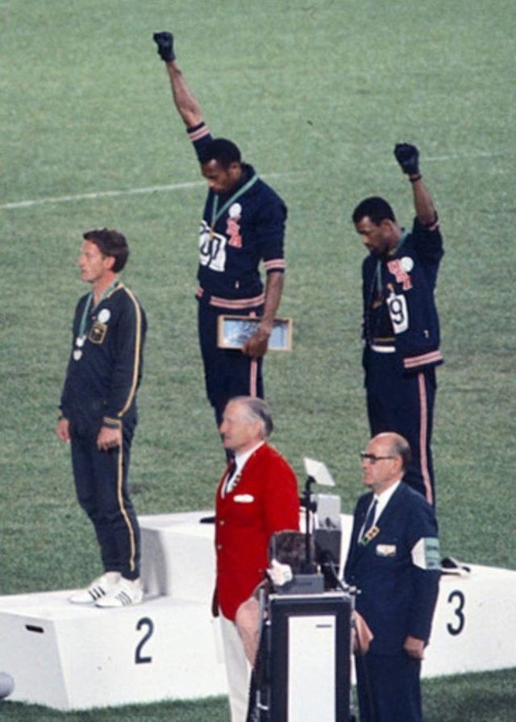
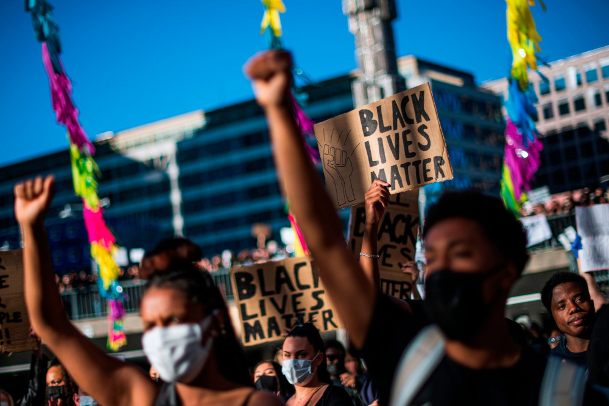

A fire still burning
My grandfather, now a great grandfather himself, protested in 1971. For 50 years, he has seen the dissent happening worldwide and offers a unique perspective on protests happening currently, especially in regards to police brutality and racism. While things have changed on a large scale, the main problem still exists- brutality towards people of color, especially at the hands of law enforcement.
The protests of 2020 have modernized the civil rights movement by not only fighting for the rights of people of color, but also for the rights of LGBT individuals. The protests since the 2012 killing of Trayvon Martin have remained largely peaceful, but it seems that a sense of devision runs deep nearly 12 years later and the demonstrations have gained momentum all over the world. In fact, the racial unrest in 2020 has gathered over 15 million people.
In the face of one of the greatest revolutions for equal human rights, we have a choice to make. What kind of world do we want for our children and grandchildren? Do we want one where we are held back by primitive idea of a racial supremacy? Or do we want a world where we can all work together to learn and grow together as human kind?